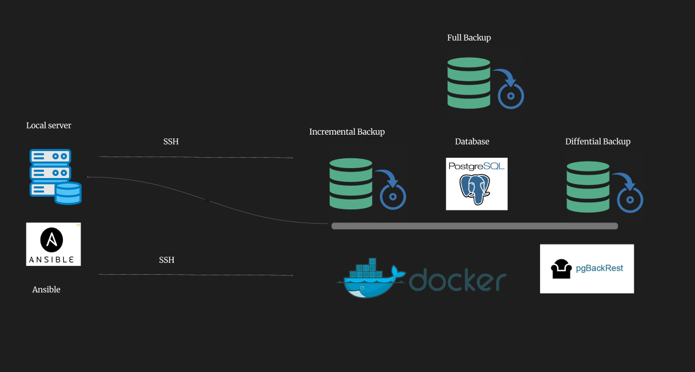

Başlangıc
Bu layihə, PostgreSQL verilənlər bazalarının etibarlı və avtomatlaşdırılmış fəlakətin bərpası (Disaster Recovery) həllini təmin edir. pgBackRest vasitəsilə tam, inkremental və differensial backup strategiyaları tətbiq edilir, Ansible playbookları isə quraşdırma, konfiqurasiya və bərpa proseslərini asanlaşdırır. Məqsəd, məlumat itkisini (RPO) minimuma endirmək və bərpa müddətini (RTO) optimallaşdırmaqdır.
Data Pipeline

Backup prosesi əsasən 3 növü var :
- Full Backup
- Incremental Backup
- Differential Backup
Ansible komandaları və izahları
| Tapşırıqın adı | Ansible Tag | Gördüyü iş | Komanda |
|---|---|---|---|
| Full Backup | create_full_backup | Full bərpanın alınması | ansible-playbook backup/full_playbook.yml --tags "create_full_backup" |
| Incremental Backup | create_incremental_backup | Incremental bərpanın alınması | ansible-playbook backup/incr_playbook.yml --tags "create_incremental_backup" |
| Differential Backup | create_differential_backup | Differential bərpanın alınması | ansible-playbook backup/diff_playbook.yml --tags "create_differential_backup" |
| Point-in-Time Recovery | restore_data | Hər hansı zamana görə bərpa prosesi | ansible-playbook backup/pitr_playbook.yml --tags "restore_data" -e "restore_time='YYYY-MM-DD HH:MM:SS'" |
| Install pgbackrest | install_pgbackrest | pgbackrest-in yüklənməsi | ansible-playbook backup/initial_playbook.yml --tags "install_pgbackrest" |
| Install wget | install_wget | wget-in yüklənməsi | ansible-playbook backup/initial_playbook.yml --tags "install_wget" |
| Queries skripti | execute_sql_script_queries | Queries skriptinin postgresə yüklənməsi | ansible-playbook backup/initial_playbook.yml --tags "execute_sql_script_queries" |
| Flight skripti | execute_sql_script_flight | Flight skriptinin postgresə yüklənməsi | ansible-playbook backup/initial_playbook.yml --tags "execute_sql_script_flight" |
| Install Flight dataset | install_netflix_dataset | Flight datasetinin mənbədən yüklənməsi | ansible-playbook backup/initial_playbook.yml --tags "install_netflix_dataset" |
| Update pgBackRest config | update_pgbackrest_config | pgBackRest konfiqurasiya faylının yenilənməsi | ansible-playbook backup/initial_playbook.yml --tags "update_pgbackrest_config" |
| Create Stanza | create_stanza | pgBackRest üçün stanza yaradılması | ansible-playbook backup/initial_playbook.yml --tags "create_stanza" |
| Get pgBackRest Info | info_playbook (task adı) | pgBackRest məlumatının JSON formatında alınması | ansible-playbook backup/info_playbook.yml |
pgBackRes_info.json Faylından Əldə Edilən Göstəricilər
pgbackrest_info.json faylı PostgreSQL instansı üçün backup və arxiv məlumatlarını ehtiva edir. Əsasən bu məlumatlar RTO və RPO hesablamaları üçün kritikdir:
backup.timestamp.start: Backup prosesinin başladığı Unix zamanı.backup.timestamp.stop: Backup prosesinin bitdiyi Unix zamanı.backup.type: Backupın növü (məsələn,full,incr,diff). Bu, bərpa müddətinə təsir edir.archive.max/archive.min: WAL arxivlərinin əhatə etdiyi ən son və ən erkən WAL seqmentləri. Bu, hansı müddətə qədər bərpa edilə biləcəyini göstərir.
RPO (Recovery Point Objective) Hesablanması
RPO, fəlakət baş verərsə, sistemin itirə biləcəyi məlumatın maksimal yaşını müəyyənləşdirir. pgBackRest məlumatlarına əsasən RPO-nu hesablamaq üçün son uğurlu backupın bitmə zamanı (backup.timestamp.stop) ilə indiki vaxt arasındakı fərq istifadə olunur.
Hesablama düsturu:
RPO = (İndiki Vaxt - Son Backupın Bitmə Zamanı)
İzah:
Bu hesablama, sistemin hər hansı bir anda neçə dəqiqəlik (və ya saatlıq) məlumat itirmə riskinin olduğunu göstərir. Məsələn, əgər son backup 60 dəqiqə əvvəl tamamlanıbsa, RPO 60 dəqiqədir. Bu o deməkdir ki, fəlakət baş verərsə, maksimum 60 dəqiqəlik məlumat itirilə bilər.
pgBackRest WAL arxivlərini istifadə etdiyi üçün, hətta backup alındıqdan sonra baş verən dəyişikliklər də WAL faylları vasitəsilə bərpa oluna bilər. Lakin RPO-nun ən konservativ hesablanması son əsas backup və ya inkremental backupın bitmə zamanına əsaslanır. PITR (Point-in-Time Recovery) imkanı WAL arxivlərinin mövcudluğundan asılıdır ki, bu da RPO-nu sıfıra yaxınlaşdıra bilər.
RTO (Recovery Time Objective) Hesablanması
RTO, fəlakətdən sonra sistemin normal işlək vəziyyətinə qayıtması üçün icazə verilən maksimal müddətdir. pgBackRest məlumatlarına əsasən RTO-nu dəqiq hesablamaq bir qədər mürəkkəbdir, çünki RTO-ya yalnız backupın özü deyil, həm də bərpa prosesi, sistemin qurulması, test edilməsi və s. daxildir. Lakin, pgBackRest info faylındakı backup.timestamp.start və backup.timestamp.stop dəyərləri backupın özünün nə qədər vaxt apardığını göstərir. Bu, RTO-nun bir komponentidir.
Hesablama düsturu (konseptual):
Backup Müddəti = (Backupın Bitmə Zamanı - Backupın Başlanğıc Zamanı)
Təxmini RTO = Backup Müddəti * Təhlükəsizlik Faktoru + Bərpa Infrastrukturunun Qurulma Müddəti + Test Müddəti
İzah:
- Backup Müddəti:
pgbackrest_info.jsonfaylındakıbackup.timestampsahəsindən birbaşa əldə edilə bilər. Bu, backupın nə qədər vaxt aldığını göstərir. Məsələn,(1762877427 - 1762877424) = 3 saniyə(JSON faylına əsasən). Real dünya ssenarilərində bu, dəqiqələr və ya saatlar ola bilər. - Təhlükəsizlik Faktoru: Bərpa prosesinin backupdan daha uzun çəkə biləcəyini nəzərə alaraq (məsələn, xarici disklərdən məlumatın oxunması, WAL-ların tətbiqi, və s.) istifadə olunan bir əmsaldır (məsələn, 1.2-1.5).
- Bərpa Infrastrukturunun Qurulma Müddəti: Yeni bir serverin hazırlanması, PostgreSQL-in quraşdırılması, pgBackRest-in konfiqurasiyası kimi addımları əhatə edir. Bu, avtomatlaşdırılmış Ansible playbookları (məsələn,
initial_playbook.yml) vasitəsilə azaldıla bilər. - Test Müddəti: Bərpa edilmiş məlumatın bütövlüyünün və sistemin funksionallığının yoxlanılması üçün lazım olan vaxt.
pgBackRest tərəfindən yaradılan info faylı bir backupın nə qədər vaxt apardığını dəqiq göstərsə də, ümumi RTO-nu qiymətləndirmək üçün əlavə əməliyyat xərcləri (serverin hazırlanması, proqram təminatının quraşdırılması, konfiqurasiya, test) nəzərə alınmalıdır.
Rəsmi RTO/RPO Sənədlərində Olması Lazım Olan Əlavə Məlumatlar (pgbackrest_info.json Olmayanlar)
Hərtərəfli və rəsmi bir Fəlakətin Bərpası (Disaster Recovery - DR) planı və RTO/RPO sənədi pgBackRest info faylından əldə edilən texniki məlumatlardan daha geniş məlumatları əhatə etməlidir. Sizin mövcud report.py və pgbackrest_info.json fayllarında olmayan, lakin rəsmi sənədlərdə mütləq olması lazım olan əlavə məlumatlar aşağıdakılardır:
-
Biznes Proseslərinin Təsiri və Prioritetləşdirmə:
- Hər bir sistemin və ya database-in hansı biznes prosesləri üçün kritik olduğu.
- Fəlakət zamanı hansı sistemlərin ilk növbədə bərpa edilməli olduğuna dair prioritetlər.
- Hər bir biznes prosesi üçün tolerant ola biləcəyi maksimal fasilə müddəti.
-
Hadisənin İdarə Olunması Prosedurları (Incident Management):
- Fəlakət aşkar edildikdə atılacaq ilk addımlar.
- Hadisənin kimə bildiriləcəyi (əlaqədar şəxslər, komandalar).
- Kommunikasiya planı (daxili və xarici tərəflərlə əlaqə).
-
Məsuliyyət Matrisi (Roles and Responsibilities):
- Fəlakətin bərpası prosesində hər bir komandanın və ya şəxsin dəqiq vəzifələri.
- Kim qərar verir, kim icra edir, kim məlumat verir.
-
Bərpa Strategiyaları və Arxivləmə Siyasətləri:
- Nə qədər müddətə və hansı tip backupların saxlandığı (məsələn, ən son 7 tam backup, 30 günlük WAL arxivləri).
- Backup mediasının yeri (on-site, off-site, bulud).
- Məlumatların şifrlənməsi və təhlükəsizlik tədbirləri.
-
Bərpa Prosedurlarının Tam Təsviri (Step-by-Step Recovery Procedures):
- Hər bir fəlakət ssenarisi üçün (məsələn, database korrupsiyası, server qəzası, region qəzası) addım-addım bərpa təlimatları.
- Quraşdırma təlimatları (əməliyyat sistemi, PostgreSQL, pgBackRest).
- Konfiqurasiya fayllarının yerləri və onların tənzimlənməsi.
report.pyfaylındakı "Fəlakətin Bərpası Addımları" hissəsi bu tələbatın bir hissəsini ödəyir, lakin daha detallı texniki addımlar, əmrlər və gözlənilən nəticələr əlavə edilməlidir.
-
Test Prosedurları və Nəticələri:
- DR planının nə qədər tez-tez test edildiyi.
- Test nəticələrinin qeydə alınması və bərpa müddətlərinin ölçülməsi.
- Aşkarlanan çatışmazlıqların və onların həlli yollarının təsviri.
-
Asılılıqlar (Dependencies):
- Bərpa ediləcək sistemin digər sistemlərdən asılılıqları (məsələn, tətbiq serverləri, şəbəkə xidmətləri, autentifikasiya sistemləri).
- Bu asılılıqların bərpa ardıcıllığına necə təsir etdiyi.
-
Resurs Tələbləri:
- Bərpa üçün lazım olan hardware (CPU, RAM, Disk) və software resursları.
- Şəbəkə bant genişliyi tələbləri.
-
Gələcək Təkmilləşdirmələr və Öyrənilən Dərslər:
- DR prosesindən və testlərdən əldə olunan nəticələrə əsasən planın necə təkmilləşdiriləcəyi.
- Öyrənilən dərslərin qeydə alınması.
Bu əlavə məlumatlar RTO və RPO-nu yalnız texniki göstəricilər kimi deyil, həm də biznes davamlılığının əsas komponentləri kimi qiymətləndirməyə imkan verir.